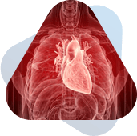
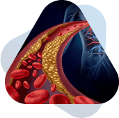

The Biggest Male Health
Breakthrough in Decades
Because it boosts energy, vitality and muscle
growth up to 200% better than testosterone!

If you’re a man over the age of 40 ...
And you’ve ever thought about using
testosterone pills, patches, or injections ...
Or even things like nitric oxide boosters, estrogen inhibitors, or cortisol blockers …
Because you think it will help you regain the energy, strength, muscle mass, and vitality you
had in your youth …
Then this may be the most important
presentation you see all year.
Because cutting edge research out of top universities like Harvard, MIT and Stanford is showing …
That things like declining testosterone levels,
nitric oxide levels and even energy levels …
Are all merely a symptom of a deeper problem going on in your body.

You see, these researchers discovered that after about the age of 40 … the “metabolic engines” that power your cells start to breakdown …
And the “vital energy” that powers your muscle cells, heart cells and even the Leydig cells that produce hormones starts to drop by 50% or more.
This is the real reason men over 40 start to experience plummeting testosterone levels … droopy muscles … weight gain … and the loss of vitality in the bedroom.
Your organs, muscles and joints no longer have the juice they need to keep you operating at your peak.
But luckily, these same researchers are now discovering there is a way to reverse this decline …
A novel RPM method that gives your “metabolic engine” a “tune-up” …
And turbocharges them so they can start churning out the “vital energy” that you need to Feel Like a MAN Again …
And after just a few short days of using this RPM method …
All these issues men associate with aging will start to melt away …
- Your body will start pumping out more testosterone … helping you transform your physique as fat melts off your body almost effortlessly and you can now build 4x more muscle than lifting weights alone …
-
Your arteries will start pumping out more nitric oxide … turning weak, trickling blood flow into a
raging river … giving you an “inner fire” that burns bright as you head into the bedroom - The neurons in the brain will start firing better … making your mind seem sharper … giving you the focus, energy and drive to conquer any obstacle thrown in your path
- Your hair follicles may even start regenerating … giving you a fuller, thicker head of hair … with the color coming back to life …
-
And all these changes will help give you a renewed sense confidence … Because you’ll know that
you can perform like the “alpha” in both the bedroom and the boardroom
And while these changes to your body and mind may seem remarkable …
They barely scratch the surface on what’s possible once you “tune up” and turbocharge your “metabolic engine”.
Because researchers are discovering the “vital energy” they provide can restore much more than just your MANHOOD.
In Fact, One National Medal Of Science Winner Believes
It Could Hold The Key To Finally
“Turning Back The Clock” On Male Aging.
Because it can help you stabilize and maintain healthy …
- Blood Sugar Levels
-
Bone Density and
Cartilage -
 Liver function
Liver function
-  Heart Health
-  Cholesterol
-
 Prostate health
Prostate health
-
 Telomeres
Telomeres
-
And even Stem
Cell function
In short, the method I’m about to share can help you build a youthful, stronger, more vibrant body all
the way down to the cellular level.
Helping you regain the energy, strength and vitality of a young “alpha” in their 20’s and 30’s.
Even better, it can help you maintain your newfound vitality well into your 70’s … 80’s … even 90’s and
beyond.
Which is probably why …
Some Men Are Even Calling It
“The Fountain Of Youth”

Take this one gentleman, Wayne H. from Ohio.
He was just recently introduced to this RPM method and it’s already making a big impact on his workouts.
Here’s what he had to say …
“It really fires me up. Just turned 66, look and act 46. Now my workouts in the gym are just simply "shock and awe", they can't believe what they are seeing.”
And Roland S., from Texas said …
“I just started using this method and after two days I can really feel an impact!”
Then there’s Gene N. who was suffering from issues related to a traumatic brain injury.
He also discovered RPM method and he
recently wrote in to say:
“It has helped me tremendously. I feel so much better. I was in a bad way and it gave me back my life.”
Then there’s Daniel M. who was a commercial plumber for over 30 years.
He was contemplating retirement because his body could no longer keep up with the work.
But after just a few weeks of using the RPM method he had this to say:
“I have noticed a change in my energy and sleep. I am a 30-year commercial plumber and
I may think twice about retirement.
Thinking I just found the fountain of youth. ”
Now I Know You May Be Skeptical …

But I assure you …
These are real testimonials … from real men … who are now experiencing more energy … better workouts … increased muscle mass … and better sex drive …
All thanks to this revolutionary, energizing RPM method.
And while these results these men are experiencing is phenomenal …
They are not the only ones experiencing “shock and awe” after witnessing what happens when you “tune up” and turbocharge your “metabolic engine.”
Scientists from the top universities like Harvard, Johns Hopkins and M.I.T. all agree …
The method I’m about to share with you today
could be the key to STOPPING and even
REVERSING male aging … permanently.
Listen To What This National
Medal Of Science Winner Has To Say

“The improvement we’ve seen is equivalent to making an 80-year-old act like someone who is 40.”[i]
That’s the report from Dr. Bruce Ames, a Medal of Science winning biochemist who has been testing this RPM method on mice.
He discovered this method helps to REVERSE the biological age of these mice all the way down to their DNA …
Helping them swim as fast and as far as mice just half their age.
And he’s not the only one.
Another award-winning scientist out of Harvard performed a similar test …
Except this time, he made a group of older mice run on treadmills.
And get this …
One mouse that received the treatment ran so long and so far …
It literally broke the treadmill!
This is the equivalent of an 80-year-old man … strapping on a pair of running shoes … and completing an ultramarathon!
All while keeping up with the 20- and 30-year old’s in the race![ii]
It’s simply phenomenal …